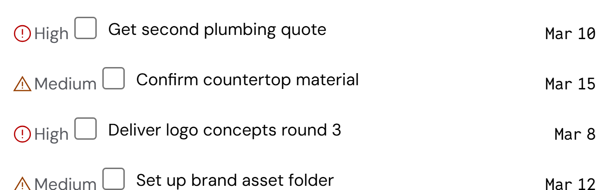
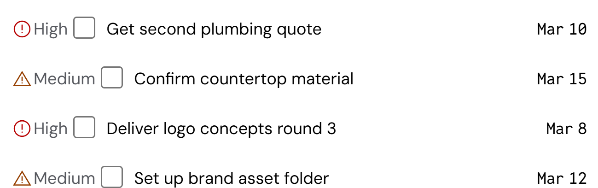

To-do rows: one baseline (#256)
On the dashboard's To do panel, each task's priority and date sat 3.5px below the task's text.
- Cause: a checkbox told its row that its baseline was the bottom of its box, not its label's text.
- Fix (geometry, no nudge): the label's text now sets the checkbox's baseline. Nothing moves inside the checkbox. Rows that align on the baseline line up on the text.
- Where it shows: any row that lines a checkbox up with text on the baseline. A checkbox placed on its own, or in a centered row, looks the same as before.
Built · dashboard To do

